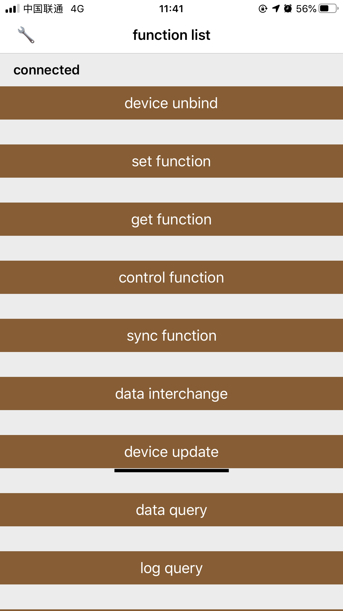
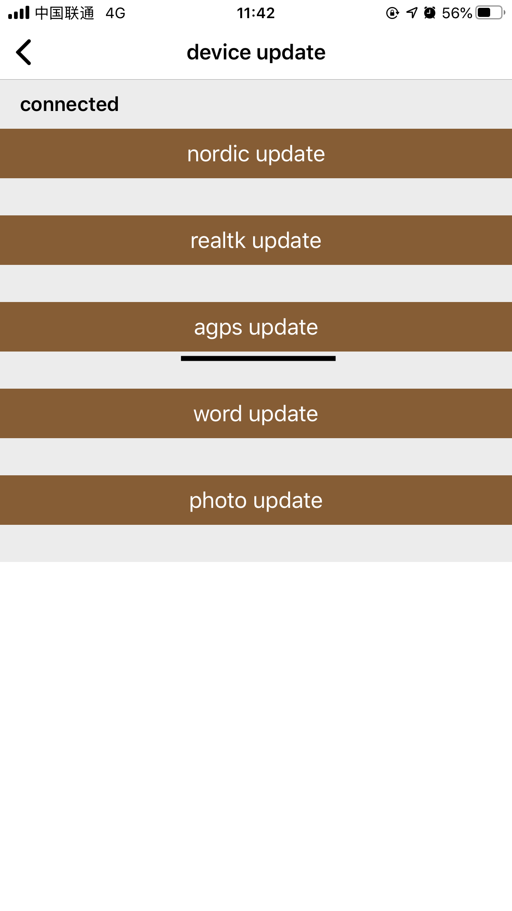

AGPS file update
11.1 Function overview
AGPS is an assisted global satellite positioning system, which refers to a GPS operating mode. It can use information from mobile phone base stations and cooperate with traditional GPS satellites to make positioning faster. It should be noted that the AGPS file update: 15 seconds after the bracelet connects to the App, the GPS status is not checked to update the AGPS file, otherwise the update will fail.
11.2 Corresponding function table
//gps
funcTable19Model.gps
11.3 Get GPS status
11.4AGPS update method
Objc:
initTransferManager().transferType = IDO_DATA_FILE_TRAN_AGPS_TYPE;
initTransferManager().compressionType = IDO_DATA_TRAN_COMPRESSION_NO_USE_TYPE;
initTransferManager().isSetConnectParam = YES;
initTransferManager().fileName = fileName;
initTransferManager().filePath = filePath;
initTransferManager().addDetection(^(int errorCode) {
if(errorCode == 0) {
//The test was successful before the update
}else {
//Detect errors before update
}
}).addProgress(^(int progress) {
//Update file progress (0-100)
}).addTransfer(^(int errorCode) {
if(errorCode == 0) {
//The file is transferred successfully
}else {
//File transfer failed
}
}).addWrite(^(int errorCode) {
if(errorCode == 0) {
//The file was written successfully
}else {
//File writing failed
}
});
[IDOTransferFileManager startTransfer];
Swift:
initTransferManager().transferType = IDO_DATA_FILE_TRAN_TYPE.AGPS_TYPE;
initTransferManager().compressionType = IDO_DATA_TRAN_COMPRESSION_TYPE.NO_USE_TYPE;
initTransferManager().isSetConnectParam = true;
initTransferManager().fileName = fileName;
initTransferManager().filePath = filePath;
initTransferManager().addDetection!{(errorCode)in
if errorCode == 0{
//The test was successful before the update
}else {
//Detect errors before update
}
}.addProgress!{(progress)in
//Update file progress (0-100)
}.addTransfer!{(errorCode)in
if errorCode == 0 {
//The file is transferred successfully
}else {
//File transfer failed
}
}.addWrite!{(errorCode)in
if errorCode == 0 {
//The file was written successfully
}else {
//File writing failed
}
};
IDOTransferFileManager.startTransfer();
11.5 DemoAGPS update function entrance
 